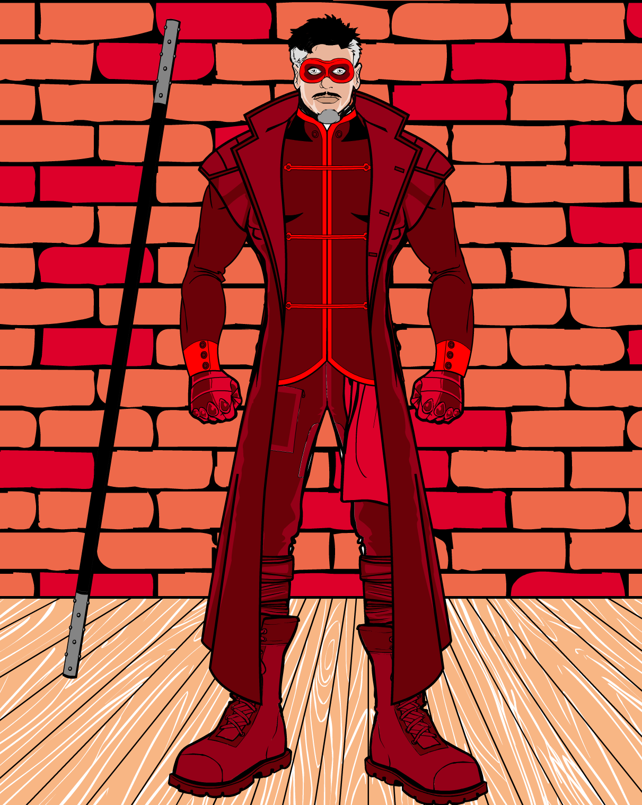

The Hero/Heroine's morals are all about doing the right thing folowing the law or very close to it to save the day. This Moral compass includes Champions of Peace and Justice and Civil Servants.
The Anti-Hero/Heroine does what he wants they way he wants to, he doesnt always follow the law and isnt above killing to acomplish his goal, but they always have a code ex: no women, no children. This Moral compass includes Vigilanties and Hero/Heroineic Criminals.
The Hero/Heroine for Hire will be your hero/heroine for a price generaly does the right thing, but for money. Tends to have a motivating reason to charge for his hero/heroineics beyond just wanting to be rich. Rarely kills and avoids working for villians. This Moral compass includes Mercenaries and Guards
Hero/Heroines can combine any of the moral compass types and have traits from each one there isnt always a set rule for how a hero/heroine acts or why he does what he does that is for your imagination to decide. There also any number of Moral Compasses these are just my examples Ex: Batman is a Hero/Heroine/Anti-Hero/Heroine he doesnt always follow the law but he wont kill and for the most part a Hero/Heroine
Powers should be Superhuman abillities that your hero/heroine relies on to inact their will on the world. When thinking about powers avoid omnipotence a hero/heroine who can defeat every enemy easily would get board themselves ask One Punch Man and although not in his case could become very boring to watch/read. If you give a hero/heroine nigh omnipotent powers give him an Achilles' heel a weekness that can render him powerless or make his Opponents Equaly as Strong. Power Ex:
This class of hero/heroine type is mostly about having regular human abilities enhanced by high intellect, tech, rigorous training, or innate talent. When creating a hero/heroine of this types think about ways they could get a leg up over a Powered/magical opponent hero/heroines like this have to be able to fight and win against villians with nigh omnipotent power and have to be able to come out victories. Batman uses his intellect and skill to fight on the same level and defeat Superman when the need arises. Martial Arts Ex:
Magical abilities can be temporary, permanate, offensive, defensive, restorative, and/or come from an enchanted items. Think about how your hero/heroine uses their magic does it come from spells or enchanted artifacts, are there incations or does it just require concentrarion. What class of spell is it offensive, defensive, or restorative? How long does it last? What is your hero/heroine specialty? Think about the drawbacks and benifits to each spell, think about how they will acquire their target. Magic Ex:
When writing you hero/heroines' begining keep these in mind:
Where did they get their power? What god/goddess/spirit does their magic stem from? What martial art did they study? what weapons do they use?
If you are going to have a hero/heroine with the Power or Magic type you should think about what could take them down or their Achilles Heel.
Think about who they are bonded to friends, family, ideals, or a code
Where will they get the idea for their costume? Who set them on the path to becoming a hero/heroine?
When you are creating your defining moment you should think about what moral compass your hero/heroine is going to have. Is he about Justice? Is he about Vengance? Is he about Money? Does he just do as he pleases?
The rise to hero/heroine is the moment he officially take on his role of being a hero/heroine. They step in to the light of society dawn their superhero/heroine names and become a part of society/world.
When creating a costume for your character you should draw insperation from their bonds, power source, and/or their insperation to create a symbol that will bring hope to the saved, cause fear in criminals and/or stand for your beliefs. This symbol will represent them to the world and the people they plan to save.
Hero/Heroine Name:The Scarlet Guard
Hero/Heroine Type: Martial Artist
Moral Compass: Hero/Heroine for Hire
Real Name: Alexander Phoenix
Origin story: Alexander was abandoned at the “Phoenix Home for misfit children” when he was five years old and his mother didn't bother to leave a name. He spent the majority of his youth in the orphanage growing up with other children some who were bigger than him that bullied him and the other smaller children. One day when he was returning from school and he saw some of the bullies that plauged him up ahead and decided to take a detour, he ended up at the Scarlet Dojo. So he began his tutelage under his Sensei Ms. Scarlet learning the martial art of Kung Fu to protect himself and the other small kids at the “Phoenix Home”. He met his best friend Darius at the dojo and the two became rivals almost instantly as they both showed talent in the material arts. In the dojo they were enemies, but outside of the dojo they were inseparable hanging out every day and bringing order to the “Phoenix Home” and recruiting almost all of the inhabitants to the Dojo bringing them together like a family. When Alexander reached the age of 18 his Sensei decided that she would hold a tournament to decide who would be her successor. In the final round he lost to Darius, but Ms. Scarlet disqualified Darius for using lethal moves that were banned from her Dojo. Darius stormed off in anger as Alexander was announced as the next leader of the Dojo. He would officially receive his new title the on the night of the scarlet moon that was set to appear later in the month. On the night of the scarlet moon he returned to the dojo and what he found was the ghastly sight of all of his sibling students dead in pools of their own blood. He found his master clinging to life when she told him that it was Darius who murdered all of his family, he vowed for Justice. Now Alexander travels the word as a mercenary for hire The Scarlet Gaurd sending almost all of his earnings back to the “Phoenix Home” and searching for his adoptive brother who took everything from him, planing to bring him to Justice.
Skills:
Costume:
